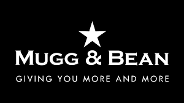
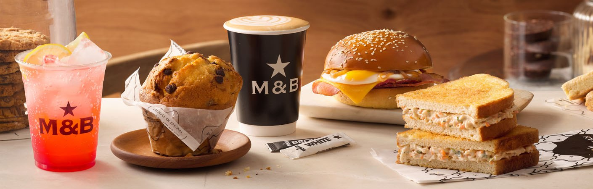
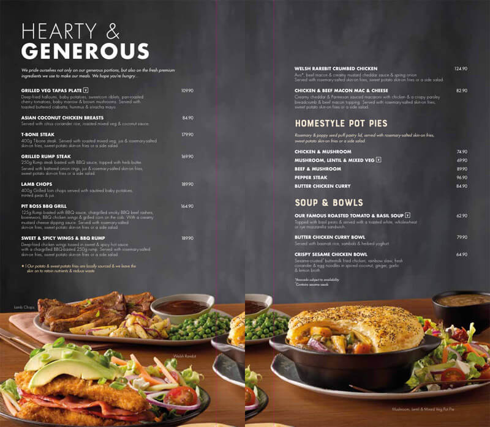

Mugg & Bean is a full-service, & On-The-Move restaurant, coffee-themed franchise restaurant chain originating from South Africa. The restaurant chain was founded in 1996 by Ben Filmalter after a visit to a Chicago coffee shop in the early 1990s inspired him to open a similar restaurant in South Africa.
 